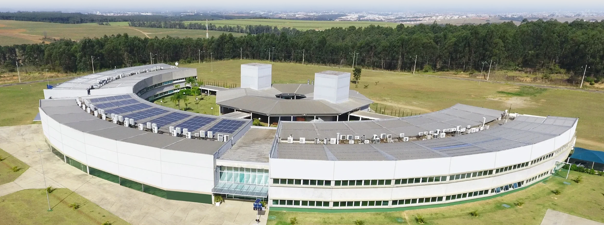

Av. Itavuvu, 11.777 – Jardim Santa Cecília, Sorocaba – SP
No dia 17 de setembro de 2026, foi realizada uma visita técnica ao Parque Tecnológico de Sorocaba (PTS), com a participação dos alunos do Curso Técnico em Desenvolvimento de Sistemas. A atividade teve como objetivo aproximar os estudantes da realidade do mercado de tecnologia, possibilitando a aplicação prática dos conhecimentos desenvolvidos em sala de aula.
Inicialmente, os alunos participaram de uma apresentação institucional sobre o Parque, sua estrutura, funcionamento e atuação no ecossistema de inovação. Em seguida, foi realizado um tour guiado pelas dependências do PTS, onde puderam conhecer diferentes salas e ambientes de empresas e startups, em sua maioria relacionadas à área de tecnologia.
Durante a visita, os estudantes puderam relacionar os conteúdos trabalhados no curso, como Desenvolvimento de Sistemas, Administração de Empresas, Metodologias Ágeis, Redes, Segurança da Informação e Carreira, com situações observadas no ambiente profissional. Também conheceram o LabX 4.0, ampliando a compreensão sobre a integração entre software, hardware, automação e inovação dentro de um ambiente empresarial.
Os alunos demonstraram interesse e curiosidade durante a atividade, observando os diferentes ambientes e possibilidades de atuação profissional. Dessa forma, a visita contribuiu para ampliar a visão de carreira dos estudantes e fortalecer a relação entre os conhecimentos teóricos do curso e as práticas encontradas no mercado de trabalho.
Local
Parque Tecnológico de Sorocaba (PTS)
Av. Itavuvu, 11.777 – Jardim Santa Cecília
Sorocaba – SP
Data e horário
17 de setembro de 2026
Embarque: 09h20 – Chegada ao PTS: 09h40
Saída do evento: 11h20
Público-alvo
Estudantes do 2º ano do Ensino Médio
Educação Profissional Técnica – Técnico em ADM & DS
Professores responsáveis
Daniele Soares Martins
Thiago Teles Garcia
Gerais
Específicos
09h20
E. E. Profª Sarah Salvestro – Sorocaba/SP
09h40
Av. Itavuvu, 11.777 – Jardim Santa Cecília
Sorocaba – SP
09h40 – 10h10
Vídeo e panorama geral sobre o impacto do PTS no ecossistema de tecnologia e inovação.
10h10 – 10h50
Passagem pelas empresas residentes, setores estratégicos e instituições de ensino parceiras, observando a cultura de startups e a aplicação de metodologias ágeis.
10h50 – 11h20
Conhecimento do laboratório de fabricação e prototipagem, entendendo a conexão com o desenvolvimento de software para hardware e automação.
11h20
Saída do Parque Tecnológico de Sorocaba.
A avaliação foi formativa e contínua, considerando:
A visita técnica foi registrada como atividade prática supervisionada, compondo parte da carga horária complementar dos cursos técnicos e contribuindo para o desenvolvimento das competências previstas no itinerário formativo.
Acesse o site oficial do Parque Tecnológico de Sorocaba e a galeria de fotos do grupo durante a visita.